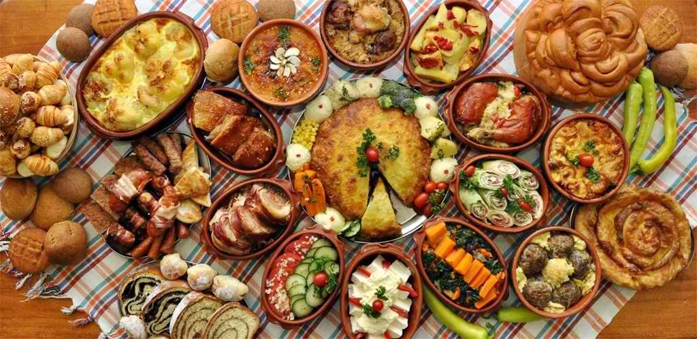
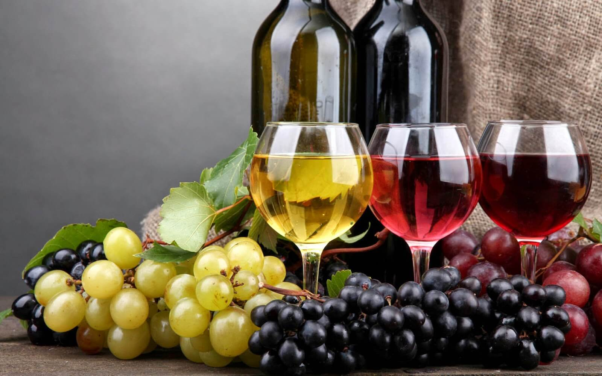
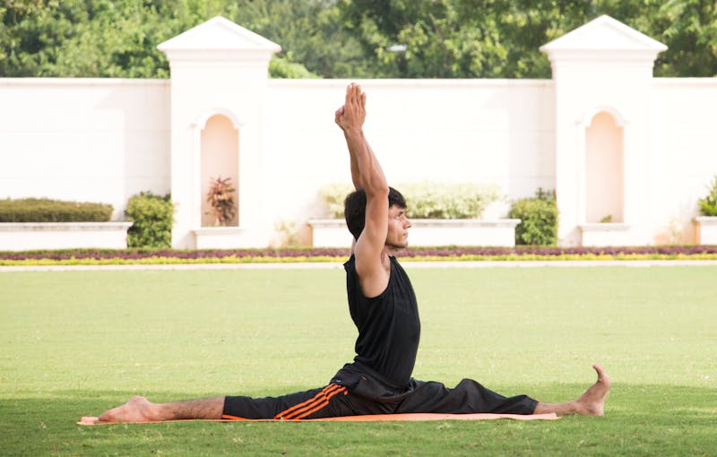
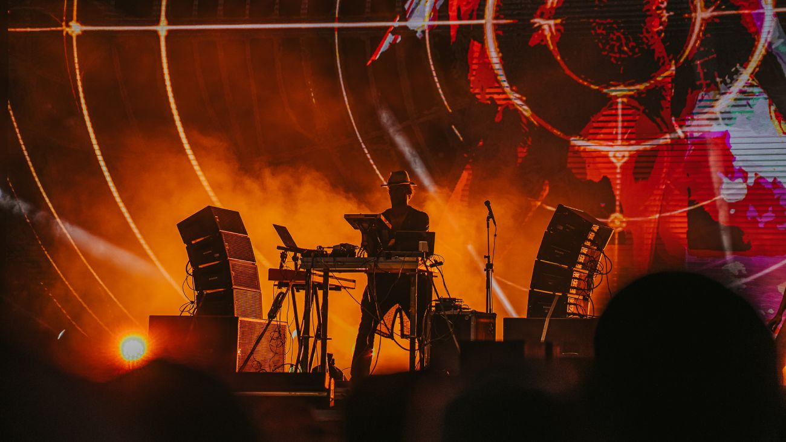
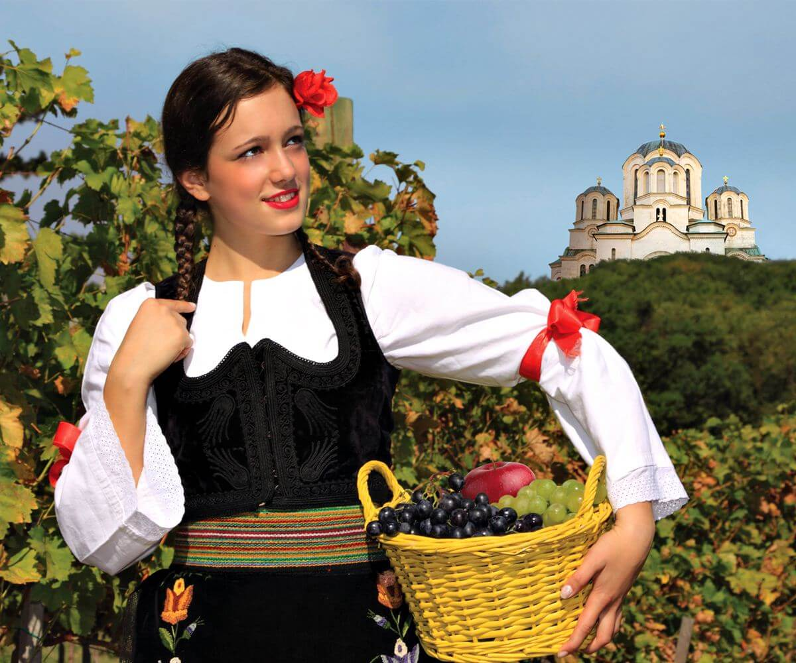
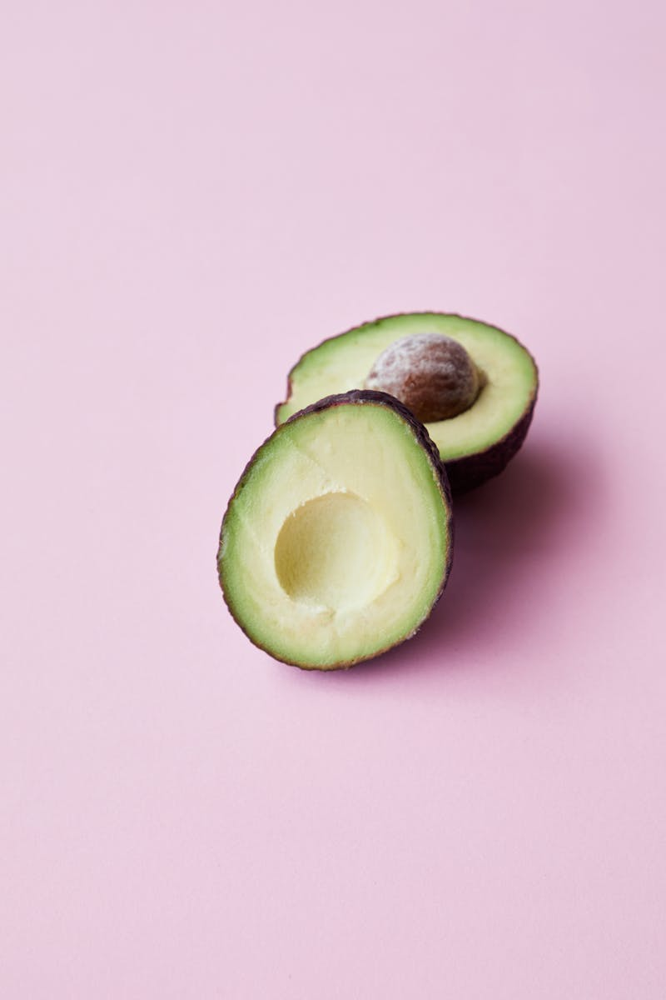

✕
The soul of Serbia — where every meal is a celebration and every gathering tells a story
Serbian cuisine is a reflection of its tumultuous history and vibrant present. Every conqueror who came to rule Serbia left some distinguishing features in its cuisine. The Ottomans, the Austro-Hungarians, and many others have influenced Serbian cuisine. The variety stems from the diversity of its geography, ethnicity, and culture.

Gastronomy
Hover or tap cards to flip →

Чевапчићи
The king of Balkan street food — juicy minced meat sausages, grilled to perfection.
Beef, pork, or lamb minced meat sausages served with onion, sour cream, and warm lepinja flatbread. An iconic Serbian comfort food found at every kafana and street corner.

Ракија
Serbia's national fruit brandy — a symbol of hospitality.
40-60% ABV, distilled from plums, apricots, or grapes. Served at every gathering and celebration. When a Serbian offers you rakija, they offer you friendship.

Кафана
The soul of Serbian social life — coffee, music, and warmth.
Locals gather for strong coffee, folk music, and lively chats from dawn till midnight. Belgrade's Skadarlija is the most bohemian district — step in and time stands still.
Events & Festivals

ЕXИТ Фестивал
One of Europe's top music festivals, held every July at Petrovaradin Fortress in Novi Sad. 40+ stages with electronic, rock, pop, and global music, lasting late into the night.

Гуча трубачки фестивал
The world's largest traditional trumpet festival, held every August in Guča. Brass bands compete for the Golden Trumpet, with street parades, folk dances, and nonstop celebrations.
Serbian Spirit

Victory is not won by shining arms, but by brave hearts
Serbians are known for their warm hospitality, open hearts, and laid-back "Polako" (take it easy) lifestyle. They treat guests like family, love music and gatherings, and savor every moment with friends over coffee, rakija, and good food. Strangers quickly become friends, and joy is shared openly — this is the true spirit of Serbia.
More Culinary Delights
Discover more Serbian classics →

Сарма
Comfort food — cabbage rolls slow-cooked for hours.
Sour cabbage leaves stuffed with minced meat and rice, slow-cooked in large pots. The ultimate Serbian winter dish — a grandmother's recipe passed through generations.

Ајвар и Кајмак
Serbia's beloved spreads — roasted pepper chutney and creamy dairy.
Ajvar: roasted red pepper and eggplant spread. Kajmak: rich dairy cream. Together with fresh bread, they form the perfect Serbian breakfast or appetizer.

Роштиљ
The beloved Balkan barbecue — a social ritual on weekends.
Grilled meats: pljeskavica (Serbian burger), ražnjići (skewers), and kobasice (sausages). Every weekend, families and friends gather around charcoal grills for hours-long feasts.
Architecture
Београд
From Ottoman-period Kalemegdan Fortress to Habsburg-style buildings in Dorćol, and brutalist Yugoslav architecture to modern glass towers — Belgrade is a living timeline of European history.

Петроварадинска тврђава
The "Gibraltar on the Danube" — a stunning Baroque fortress built in the 18th century by the Habsburg Empire. Famous for its iconic clock tower showing the time to passing boats.
Crafts & Traditions
Opanci (leather shoes), woven belts, and embroidered vests. Each region has distinct patterns — from Sumadija's bright colors to Vojvodina's more subtle tones.
Folk instruments: frula (flute), accordion, tamburica (string instrument), and gusle (one-string fiddle). The Guča trumpet festival keeps brass traditions alive.
Zlakusa village is famous for handmade pottery. The Pirot kilim rug weaving tradition goes back centuries. These skills are recognized by UNESCO.
Serbian Orthodox monasteries like Studenica and Žiča house remarkable medieval frescoes — an important part of Serbia's UNESCO World Heritage.